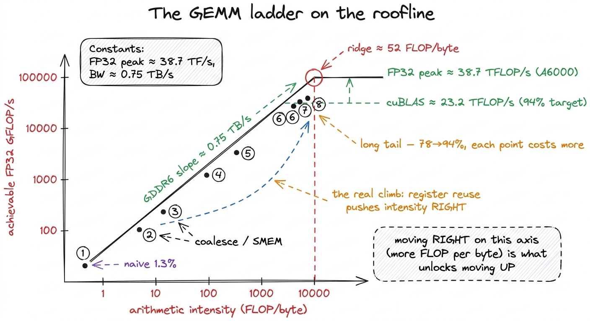
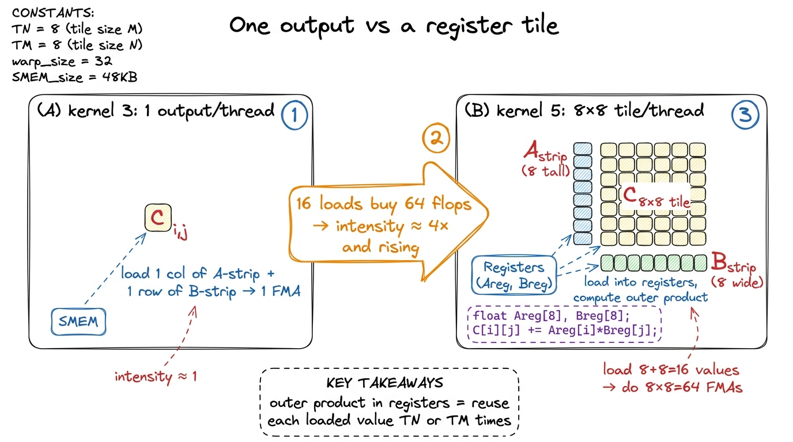
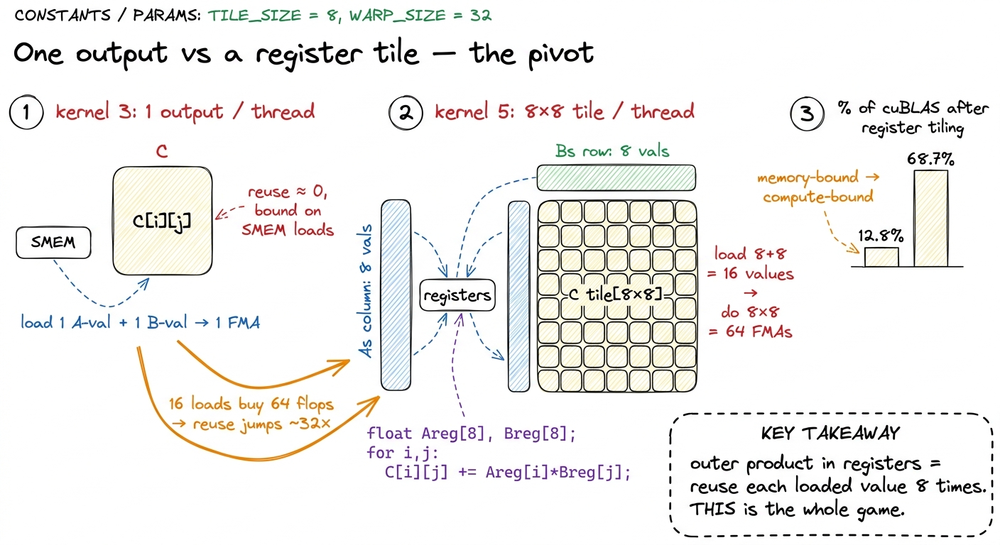

The ladder, end to end RECAP
We started this ladder with a kernel that hit a humiliating 1.3% of cuBLAS, and we are ending it — nine measured steps later — at 93.7%. That is a factor of roughly seventy, closed one hypothesis at a time, without a single trick we could not first see in a profiler. This article is the view from the top of the ladder. I want to put all the kernels on one roofline, lay out the summary table you have been waiting for, and then extract the handful of principles that are not really about GEMM at all — they are about any kernel you will ever write.
If you have been following along from kernel 1, none of the numbers here are new. What is new is seeing them as a shape: where the big jumps were, where the diminishing returns set in, and why.
The whole ladder on one table
Here is every kernel we built, in order, with the throughput each one reached and its fraction of FP32 cuBLAS on the same card — an RTX A6000, running a large square SGEMM.1 These are FP32 (SGEMM) numbers on a 4092² problem, following Simon Boehm's ladder. cuBLAS itself is the moving target we chase — the same library NVIDIA has been tuning for fifteen years — so "% of cuBLAS" is a more honest yardstick than raw GFLOP/s, which flatters you on a good card. The A6000 tops out near 38.7 TFLOP/s FP32, and cuBLAS reaches roughly 23.2 TFLOP/s of that on this problem. This is the one table the style spec allows, and it earns its place.
| # | Kernel | The one idea | % of cuBLAS |
|---|---|---|---|
| 1 | Naive | one thread per output element | 1.3% |
| 2 | GMEM coalescing | reorder threads so a warp reads contiguous memory | 8.5% |
| 3 | SMEM cache-blocking | stage tiles of A/B in shared memory, reuse per block | 12.8% |
| 4 | 1D block-tiling | each thread computes 8 outputs, accumulate in registers | 36.5% |
| 5 | 2D block-tiling | each thread computes an 8×8 register tile | 68.7% |
| 6 | Vectorized access | float4 loads/stores, transpose As on the way in | 78.4% |
| 7 | Autotuning | search BM,BN,BK,TM,TN empirically | 84.8% |
| 8 | Warp-tiling | add a warp-level tile between block and thread | 93.7% |
Read the last column as a story. Two changes — coalescing and shared memory — took us from 1.3% to 12.8%, roughly a 10× swing, and neither touched the math. The three tiling kernels are the real climb: 12.8% → 68.7% is where we stopped being memory-starved and started keeping the FMA pipes busy. And the last three kernels — vectorize, autotune, warp-tile — are the long tail, each buying single-digit percentage points at rapidly rising engineering cost. That curvature is the most important thing on the page, so let me draw it.

figure rendering · Every kernel is one dot. Optimization is walking rightward up the memoThe five moves that transfer to any kernel
Strip the GEMM specifics away and what is left is a general playbook. I have used every one of these on kernels that have nothing to do with matrix multiply — softmax, layernorm, attention. They are the moves.
1. Coalesce before anything else
The cheapest, highest-leverage change in the entire ladder was kernel 2: a one-line remap of threadIdx so that the 32 threads of a warp read 32 contiguous addresses instead of 32 strided ones. That alone took us from 1.3% to 8.5% — a 6.5× win from zero math change. The reason is hardware: the memory system services a warp's loads in 128-byte transactions (four 32-byte sectors). If a warp's 32 threads touch one contiguous 128-byte line, one transaction serves all of them; if they stride, you pay for bytes you throw away.2 The naive kernel's real crime, per the profiler, was traffic: it moved roughly 548 GB against a theoretical minimum near 268 MB. Almost all of that was sectors fetched and discarded. Coalescing does not read less data logically — it stops wasting the transactions you already pay for.
The general rule: index so that consecutive threadIdx.x maps to consecutive memory. On any kernel, check this first. It costs a line and it is often worth a factor of several.
2. Tile into shared memory to kill re-reads
The naive kernel re-read every element of A and B from global memory N times. Shared memory (SMEM) — the fast, software-managed scratchpad carved out of the same on-chip storage as L1, up to 100 KiB per SM usable as SMEM on the A60003 That per-SM maximum is not a hard constant — you opt into a larger carveout with cudaFuncSetAttribute / cudaFuncAttributePreferredSharedMemoryCarveout, and the exact usable max depends on the split you request against L1. Boehm's cache-blocking kernel only needed a modest tile: 2·32·32·4 B = 8 KiB of SMEM per block. — lets one block load a tile once and reuse it across all the threads that need it. Kernel 3 loaded BK-wide strips of A and B into SMEM, and every thread in the block computed against the cached copy.
Shared memory got us to 12.8%, which is a smaller jump than you would hope. That is the honest part: staging in SMEM removes HBM pressure, but if each thread still produces only one output, you are now bottlenecked on shared-memory loads instead. Which is exactly what the profiler said, and exactly why the next move is the important one.
3. Reuse in registers — this is the whole game
Here is the move that did the real work, kernels 4 and 5. The idea is arithmetic intensity: FLOPs performed per byte moved. Everything above is about lowering the denominator (move fewer bytes); register tiling raises the numerator (do more math per byte you have already paid for).
Instead of each thread computing one output element, each thread computes a small tile of them — 8 in kernel 4, an 8×8 = 64-element tile in kernel 5 — accumulating into registers (the 256 KB register file per SM, 65536 32-bit slots, up to 255 per thread). The payoff is combinatorial. Below is the arithmetic, on a napkin.

figure rendering · The register tile is the pivot of the whole ladder. Loading 16 valuesEach value loaded from SMEM into a register is now reused across a whole row or column of the thread's output tile — an outer product, C[i][j] += Areg[i] * Breg[j]. Sixteen loads produce sixty-four FMAs. That single structural change took us from 12.8% to 36.5% (kernel 4), then to 68.7% (kernel 5). We crossed from memory-bound into the compute-bound regime described in the three regimes; the profiler's complaint shifted from memory-pipeline congestion to the math-instruction queue (MIO) throttling — a bottleneck you want, because it means the expensive silicon is finally busy.
The transferable lesson: staging data in fast memory is necessary but not sufficient. You only get paid when each staged byte is reused many times out of registers. On any kernel, the question "how many FLOPs does each loaded value participate in?" is the one that predicts your ceiling.
4. Vectorize the memory instructions
By kernel 6 we were compute-bound but still issuing more memory instructions than necessary. Switching every global load and store to float4 — 128 bits in one instruction — quartered the number of load/store instructions and let the compiler emit the widest LDG.E.128 variants. You must promise alignment for this: the compiler cannot prove a float* is 16-byte aligned, so you cast to float4* (reinterpret_cast<float4*>) to assert it — get it wrong and you get a misaligned-address fault, not a slowdown. We also transpose As during the GMEM→SMEM copy so the inner loop reads it contiguously. Fewer instructions issued means the warp scheduler spends fewer cycles on address arithmetic and more on FMAs. Kernel 6 reached 78.4%.
The general rule: once you are compute-bound, instruction count starts to matter. Wide loads (float4, int4), fused ops, and anything that reduces issued instructions per useful FLOP buys the next few points.
5. Make the parallelism hierarchy explicit, then autotune it
The last two rungs are about matching the code to the machine's structure. Autotuning (kernel 7) accepts that the best tile sizes — BM, BN, BK, TM, TN — are not derivable from first principles; they depend on register pressure, occupancy, and the specific SM. You sweep the space and measure. That got us from 78.4% to 84.8% with no new idea, just search.4 The optimal config genuinely differs by GPU — Simon Boehm found the A6000 and A100 wanted different tile shapes for the same kernel. This is why production libraries ship dozens of pre-tuned kernels and dispatch by shape and architecture at runtime.
Warp-tiling (kernel 8) adds the missing middle layer of the hierarchy: block → warp → thread. Between the block tile in SMEM and the thread tile in registers, we give each of the block's warps its own sub-tile to own. This improves register-cache locality and keeps each warp's work contiguous, so the scheduler and the register file cooperate instead of thrashing. That is the final 93.7%.

figure rendering · The finished kernel is three nested tiles, one per level of the memoryWhy the curve flattens
Look back at the table and notice the shape of diminishing returns: 1.3 → 8.5 → 12.8 is steep, 12.8 → 36.5 → 68.7 is the climb, and 68.7 → 78.4 → 84.8 → 93.7 crawls. The last six points cost more engineering than the first sixty. This is not a failure — it is the roofline asserting itself. Once you are near the compute ceiling, there are no more order-of-magnitude wins to be had; you are fighting for bank-conflict-free SMEM access patterns, for double-buffered pipelines that hide the last few load latencies, for the exact tile shape that fits the register file without spilling.5 The remaining gap to cuBLAS is closed with things we deliberately skipped here: double-buffering the GMEM→SMEM copies to hide load latency, and avoiding shared-memory bank conflicts by padding. On newer architectures there is more still — Hopper adds wgmma tensor-core instructions and TMA-driven async copies — but those belong to a different card than the A6000 we benchmarked here. Each is its own article.
And this is exactly what the roofline predicted. Every kernel below the elbow was walking rightward — raising arithmetic intensity so the memory slope stopped being the wall. Every kernel after the elbow was pushing upward against a fixed FP32 compute ceiling of about 38.7 TFLOP/s, where wins are bounded by definition. The picture told us where the easy money was before we wrote a line.
The habit, one more time
If you take one thing from this whole worklog, take the loop, not the kernels. Every rung was the same four beats: state a hypothesis about the bottleneck, write the smallest kernel that tests it, profile it, and let the profiler — not intuition — pick the next move. The naive kernel said "memory," so we coalesced. Coalescing said "reuse," so we tiled to SMEM. SMEM said "not enough work per byte," so we tiled to registers. Registers said "instruction count," so we vectorized. Each move was handed to us by the previous measurement.
That is the transferable skill, and it is why the three regimes diagnostic sits at the front of this course. You do not need to memorize eight kernels. You need to be able to look at any kernel, in under a minute, and answer: what is it waiting on? Answer that honestly, again and again, and you will climb any ladder — GEMM or otherwise — from a humiliating single-digit percentage to something a hiring manager, and NVIDIA, will respect.